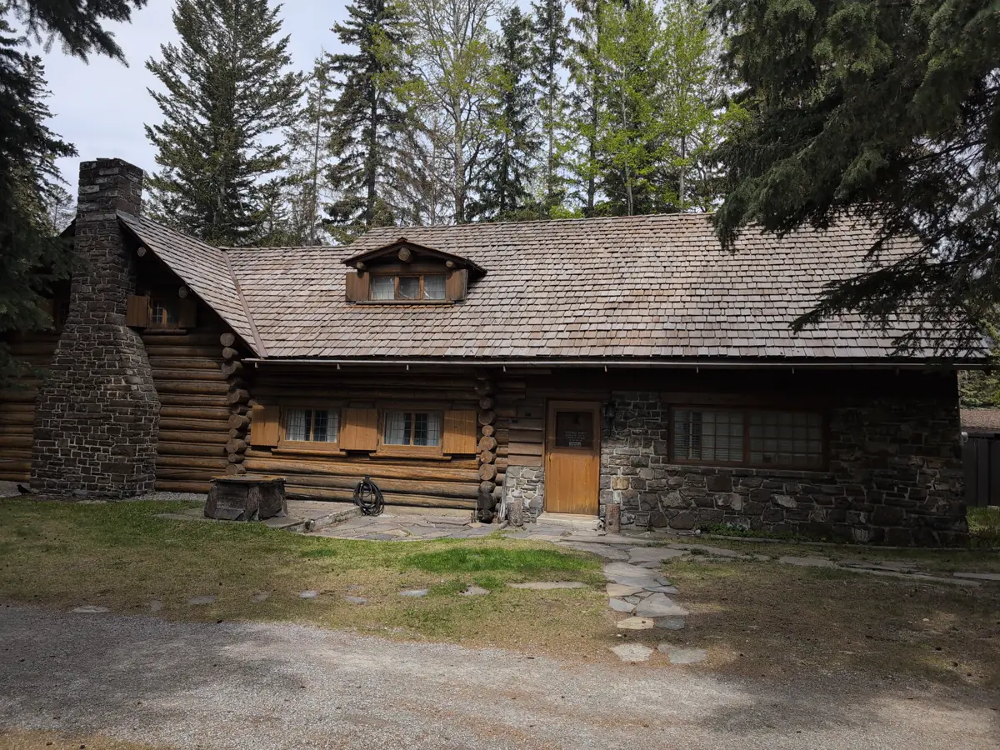
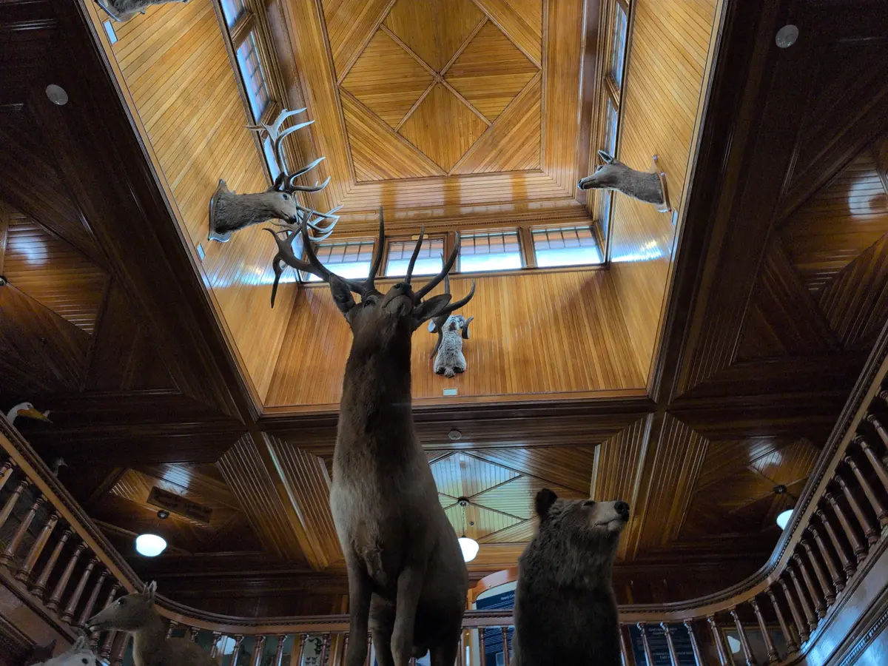

Banff Canadian National Park Travel Log: Day Six
This blog post series is a direct transcript of the notes I took while visiting Banff National Park in Alberta, Canada. I left with my sister and a friend of ours on the 18th of May and returned on the 26th. I hope it inspires you to travel to the Rocky Mountains and have an adventure of your own. We will certainly be returning.
Saturday, May 24th
Today we left at 10:30am MDT after a lovely egg sandwich breakfast by my sister (I love you NAME REDACTED!). We toured the Moore and Whyte family display homes at 11am. We learned that their philanthropic relationship with the Banff in the early twentieth century was foundational to the park’s identity today. I was surprised to learn that Pearl Moore was a beading competition judge, and had many pieces of art and beadwork gifted to her estate by indigenous. Our Australian tour guide, Peter, was quick to point out the irony of our tour group consisting entirely of Americans and Brits, with no Canadians or indigenous people whatsoever. The tour ended with a story about Bill Peyto, a famous woodsman and mountain guide, allegedly releasing a snared lynx into a hotel bar to clear out other customers so he could have a drink in silence.

We then proceeded into the Whyte museum proper, to view the widely-advertised Indigenous Seven art exhibit, which had opened a few weeks ago. It felt like the first display of indigenous culture that was celebratory rather than dismissive or apologetic. The rest of the museum had old recordings of railway construction, letters between early prospectors, and a history of how Banff went from a small moutain town to a Canadian national park. Included in the exhibits were letter from Native Americans, cosigned by the UN, formally requesting permission from the Canadian Government to travel between the segregated reservations to hunt and worship on their own terms.

At 3:00pm MDT we rented bikes from Banff Adventures once again and cruised down past Bow River Falls to bike the paved trails near Fairmont’s Banff Springs Golf Course that we had to skip on our first biking excursion. The paved trail made for much easier riding than the Surprise Corner or Hoodoo trail, and we made it around the river with no trouble. My traveling companions stopped by The Waldhaus to see what was on the menu. 34 CAD$ for a burger? Maybe another day.
After returning our bikes at 6:30pm MDT, I decided to run off solo to the Banff Visitor Center to pick up an English/French park pin, and nearly got lost on my way back to our parking spot across town. I ended up running all the way up Cougar Street between the condos to get back, thinking I was late. To my continuing luck, my friend had independently decided to get some trinkets of their own on the way, and we all arrived at about the same time, though I was the only one gasping for air thanks to Banff’s elevation of 1,380m (~4,530ft).